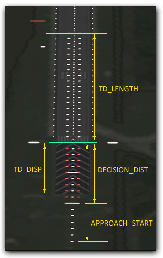

You need a DirectX February 2010 or newer to run D3D9Client. To install the client itself you need to extract the zip package in the root folder of the Orbiter. In order to use a graphics client you need to run "Orbiter_ng.exe" instead of "Orbiter.exe". Also the client must be activated from the Modules tab.
If the redistributable package isn't installed in your computer you will receive an error message "The program can't start because d3dx9_42.dll is missing from your computer". Or you may see a pop-up window in Orbiter LaunchPad telling about a missing runtimes. If that happens then download and extract the content of the package in any empty directory you want and then find a Setup.exe and run it. You can delete the contents of the directory after the setup is completed. The directory is just a temporary storage for the installation files.
Here is a link: http://www.microsoft.com/en-us/download/details.aspx?id=9033
In order to use Spacecraft3.dll and Orbiter Sound with a graphics client. A symbolic links must be created in /Modules/Server/ folder for "Config" and "Sound" folders those are located in a root folder of the Orbiter. If you are using Windows XP or newer and your installation is on a NTFS filesystem, these links can be created from Video Tab -> Advanced Setup. If you have problem with the links you can also use a software called Link Shell Extension (see link below) or you can simply copy the Config and Sound folders into /Modules/Server/ but then you have to keep them updated manually.
Here is the link: http://schinagl.priv.at/nt/hardlinkshellext/hardlinkshellext.html
D3D9Client doesn't support alt-tabing in a so-called "True Fullscreen Mode". Therefore, it's recommended that you use a windowed fullscreen mode that will run the orbiter in a fullscreen sized borderless window. There is also a conflict between a GDI based dialog (i.e. pop-up) windows and anti-aliasing in a true fullscreen mode which will disable the anti-aliasing.
Under the regular Video Tab of the Orbiter (Orbiter_NG) Launchpad you find the "Advanced" Button that will show the "D3D9Client Advanced Setup" Dialog. Here you can change several settings to tweak your experience with the D3D9Client.
On the lower left side of the Dialog you'll find the "Create symbolic links" button that will create the symbolic links that are needed for some add-ons. The symbolic links can only be created on an NTFS filesystem, so if you have installed your Orbiter installation for example on an FAT32 of extFS filesystem this feature will not work. In this case you have to copy the according folders as explained in the "Orbiter Sound, Spacecraft3.dll" chapter (above).
Here you can change the behavior how the D3D9Client will load surface textures. The two options available are either "Load on demand (recommended)" or "Pre-load at session start":
With this recommended option selected the D3D9Client will only load surface textures when they come into view while you are orbiting a planet. The value in the "Max. load frequency [Hz]" input field lets you tune the maximum frequency the D3D9Client will check whether some new surface textures have come into view.
With this option selected the D3D9Client will load all surface textures at startup of a scenario which results in a longer loading time.
Here you can change settings according to your graphic hardware:
Depending on your hardware you can select the anti-aliasing feature that will "smoothen" the visual artifacts that occur when displaying edges.
Depending on your hardware you can select the level of anisotropic filtering. For further details about this topic take a look at Anisotropic filtering in the wikipedia.
Following checkboxes can be checked (enabled) or unchecked (disabled) to further fine-tune your D3D9Client experience:
With this option enabled the D3D9Client
will load all base visuals at startup of a scenario which results in a
longer loading time.
With this option disabled the D3D9Client
will only load base visuals when they come into view while you are e.g.
flying through the atmosphere or orbiting a planet.
With this option enabled D3D9Client will try to add additional texture information for meshes that supply them. This advanced texture maps define for example how "rough" or "shiny" a texture appears.
With this option enabled D3D9Client will try to add additional texture information for meshes that supply them. This environment maps define how "reflective" a texture appears. This reflections can be seen best on shiny metal surfaces, which do reflect the "environment" more or less mirror- like.
Note: This option must be enabled to be able to use the "D3D9 Debug Controls" dialogs option which displays the current enviornment (as a flattened cuboid) for debugging purposes.
If the near clip-plane compatibility mode is enabled then the minimum clip-plane distance is 1.0 meters as is in the Orbiters internal engine. If the compatibility mode is disabled then the client can reduce the clip distance down to 0.1 meters, if there is a graphics close to the camera. This setting will only effect in so-called exterior pass. Virtual cockpit near clip-plane distance is defined in D3D9Client.cfg and the default value is 0.1 meters.
The SketchPad is used in Orbiter to draw 2D graphics onto surfaces. These are for example MFD Displays or announcements in the Simulation.
The two options you can choose from at "Device to use" are "GDI/DirectX" and "GDI Only".
GDI/DirectX will use the DirectX 2D
drawing capabilities of your graphic hardware to draw 2D surfaces.
Normally this is the recommended setting, because it will not produce so
much CPU load that the "GDI Only" option.
GDI Only will only use GDI to draw 2D
surfaces which might be the option when you experience any glitches or
graphical artifacts in MFD screens. This mode is used for older graphic
hardware to be able to run Orbiter.
The four options you can choose from at "Font rendering" are "Crisp", "Default", "Cleartype" and "Proof Quality".
Each setting will render fonts more smooth but uses a bit more graphic hardware performance.
The generic configuration contains options that will change the general behavior of D3D9Client. For most of the time the default setup should be fine ("Default" Shader set and Debug Level "1"). But you can for example change the verbosity of the internal logging system to be able to report more detailed issue information when you experience an error/failure.
If you have different shader sets you like to switch between, this select
box lets you choose between them.
Note however, that this option is not always available and strongly
depends on the version of D3D9Client! The R6 release for example has only
the "Default" shader set to select.
The five options you can choose from here [0...4] represent the level of information that will be written into the log-file. The log-file is called D3D9ClientLog.html which can be found in Modules\D3D9Client\ directory. Higher values will create more detailed output.
Until you have any problems and like to have more detailed information what's going on, you should keep this level reasonably low as higher values will result in more disk I/O what slows down the Simulation.
The stereoScopic 3D settings allow you to tweak the 3D experience if you are using a NVIDIA graphic card that provides this feature.
The convergence value lets you choose "how far your eyes are apart". The default value is 0.2 meters (20 cm / 7.8 inches) which is round about the average distance between your eyes. Increasing this value might result in a view with "more depth".
In optics, particularly as it relates to film and photography, depth of field (DOF) is the distance between the nearest and farthest objects in a scene that appear acceptably sharp in an image. In the context of Stereoscopic 3D it defines the distance where the relative position between the "right eye objects" and the "left eye objects" are overlapping exactly and switch their position when further away or closer that that "point". For further details about this topic take a look at Depth of field in the wikipedia.
The D3D9Client allows you to to configure some more details when settings up
runway lights.
Additionally to the parameters that Orbiter itself defines (see
Doc\OrbiterConfig.pdf for further details) there are some extra
parameters you can define.
For a better understanding how some of those parameters will affect the
rendering of the runway lights this image might help:

First end point of runway (center line).
Second end point of runway (center line).
Runway width (m)
Note: Two different light configurations exists (wide>59m) and
(narrow<59m)
Precision Approach Path Indicator (PAPI).
Parameters:
Designated approach angle (deg)
Approach cone aperture (deg)
Offset of PAPI location from runway endpoints. (m)
PAPI Mode (int:0-3) (this is optional parameter)
PAPI runway end point (int: 0-1) (if this parameter is not defined then
PAPI is added in both ends)
PAPI Modes:
0: On center line
1: On left side
2: On right side
3 or none: On both sides
PAPI Endpoint:
0: PAPI lights added to END1 only
1: PAPI lights added to END2 only
Not Defined: PAPI lights added in both ends
Note: Runwaylights can have 12 PAPI lights. Orbiter's inline engine will
ignore the last parameter. If more than one PAPI entries exists in the
runwaylights the inline engine will only use the last one.
Visual Approach Slope Indicator (VASI).
Parameters:
Designated approach angle (deg)
Distance between white and red indicator lights (m)
Offset of VASI (red bar) location from runway endpoints (m)
VASI runway end point (int: 0-1) (if not defined then VASI is added in both ends)
Note: Runwaylights can have 2 VASI lights.
Touch Down displacement (m). (default: 0m)
Displacement between runway endpoint and the green line.
Touch Down displacement for the other end of the runway (m).
(default: 0m)
Displacement between runway endpoint and the green line. If this value
isn't specified then TD_DISP is used for both ends of the runway.
Length of the Touchdown zone (m). (default: 600m)
Two columns of lights on a runway each containing 3 parallel lights.
Length of the "red lights" zone (m). (default: 257m)
This zone contains 2 x 3 x 9 red lights and the spacing between lights
will depend about the length of the zone. The touchdown zone will use the
same spacing about 30m.
Length of the approach lights from the green line (m).
(default: 900m)
It's the long column of 5 parallel lights.
If the singleended keyword is defined then the lights are only rendered when approaching a runway from END1 towards END2. If you want a asymmetric runwaylights then you need two runwaylight sections in a base configuration file.
Defines the category of runway lights. 1 = SSALR, 2 = ALSF-II, If this value isn't specified then the category is automatically selected based on a runway width. ALSF-II is used if the width is greater than 59m.
Example of runway lights for KSC:
RUNWAYLIGHTS END1 -8220 -3 -600 END2 -12670 -12 -3155 WIDTH 100 PAPI 5.0 3.0 257 3 ; both sides of the green line, in both ends PAPI 20.0 3.0 -2000 0 0 ; on a center line 2km before rwy in END 1 PAPI 20.0 3.0 -2000 3 1 ; both sides of center line, 2km before rwy, in END 2 VASI 1.5 152 671 TD_DISP 257 TD_LENGTH 600 DECISION_DIST 257 APPROACH_START 900 END
Additional texture maps can be automatically assigned for a mesh simply by placing additional textures into a texture folder. Additional textures are identified by using an identifier in the end of the textures name like "dgmk4_1_bump.dds" where "dgmk4_1.dds" is the name of the base texture.
A fully specified texture set could for example consist of these files:
cube.dds <= 'base' texture
cube_bump.dds <= 'advanced texture Bump-map'
cube_spec.dds <= 'advanced texture Specular-map'
cube_emis.dds <= 'advanced texture Emission-map'
Available identifiers are:
Tangent space normal map and the valid formats are:
<R8G8B8> 3-bytes per pixel. Best quality (uncompressed)
<V8U8> 2-bytes per pixel. Good quality (uncompressed)
<DXT1> 1-byte per pixel. Bad quality (compressed)
V8U8 offers the best quality for 2-bytes per pixel. This format can be
created with nVidia texture tools.
Note: The configuration of this (_norm) identifier is ignored if a _bump configuration is also found. However, the _norm configuration is the prefered one that should be used when you have the choice (see also _bump).
Specular map controls a specular reflection in per pixel basis. Alpha channel is containing a specular power setting. Value 255 is mapped to 80.0 and 0 to 0.0. Valid formats are <R8G8B8A8>, <DXT3> or <DXT5>. If a specular map is assigned then a material specific settings are ignored.
Bump maps are also supported by the D3D9Client. They are automatically
converted into normal maps during loading of bump maps (see note).
The recommended formats are <A8> and <L8>:
<A8> 1-byte per pixel alpha
<L8> 1-byte per pixel luminance
From the not recommended multi-channel textures only the red
channel is used; They are:
<R8B8G8> 3-bytes per pixel (only red is used anyway)
<DXT1> 1-byte per pixel compressed
<R16F> 2-bytes per pixel (might work, not tested!)
Note: The configuration using the (_bump) identifier will overwrite any _norm configuration in case both identifiers are found. The _norm configuration is however the one that should be used when you have the choice (see also _norm).
Currently emission map works more like a light map and the simplified equation is:
pixel_color.rgb = texture.rgb * clamp(emission_map.rgb +
sun_light.rgb + local_lights.rgb)
Alpha channel is ignored therefore the recommended formats are
<R8G8B8> or <DXT1>.pixel_color.rgb = texture.rgb * clamp(sun_light.rgb + local_lights.rgb)
+ emission_map.rgb
Of course, the clamp function can be changed to a different kind of
color curve manipulation function to control contrast and lightness.